Префектура Окинава · Урума · еда
Mauvaise herbe: французская кухня из дикой птицы, кабана и трав Окинавы
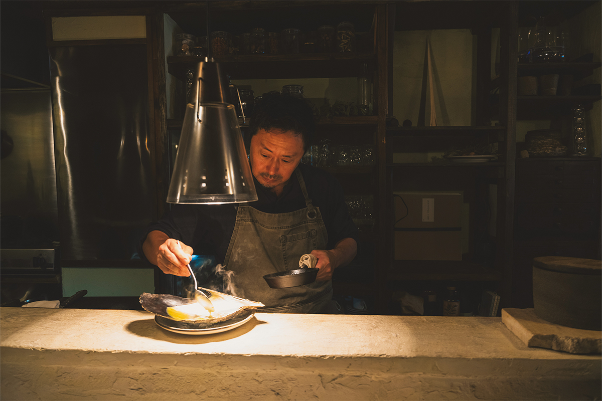
Шеф, который прославился выездными французскими ужинами, в 2020 году открыл собственный ресторан в центральной части острова Окинава. В его меню вороны, кабан, коровы-матери и сорные травы, и за каждым блюдом стоит длинная история о том, откуда взялся продукт.
Ресторан
Пять мест у стойки
У этого шефа много поклонников и за пределами префектуры, и за границей. Сначала его знали по выездной французской кухне под вывеской «Ресторан без названия». В 2020 году он открыл в центральной части острова Окинава ресторан Mauvaise herbe и сделал его базой для работы, которая давно вышла за рамки простого приготовления продуктов. Он много думает о том, что такое ресурсы и в чём настоящая ценность еды.
Ресторан работает только по предварительной записи. Шеф ведёт его один, у стойки всего пять мест. Меню одно: сет на выбор шефа. Все продукты, кроме части приправ, окинавские.
В тот день в сете было десять блюд: «Корни», «Ракушка магаки и рюкюский кабан», «Островная коза», «Рюкюская ворона, китайский бюльбюль и горлица», «Мабэ и бобы», «Тайваньская барракуда», «Говядина Аяхаси», «Трава и земля», «Фромаж блан и маракуйя» и «Нигана».
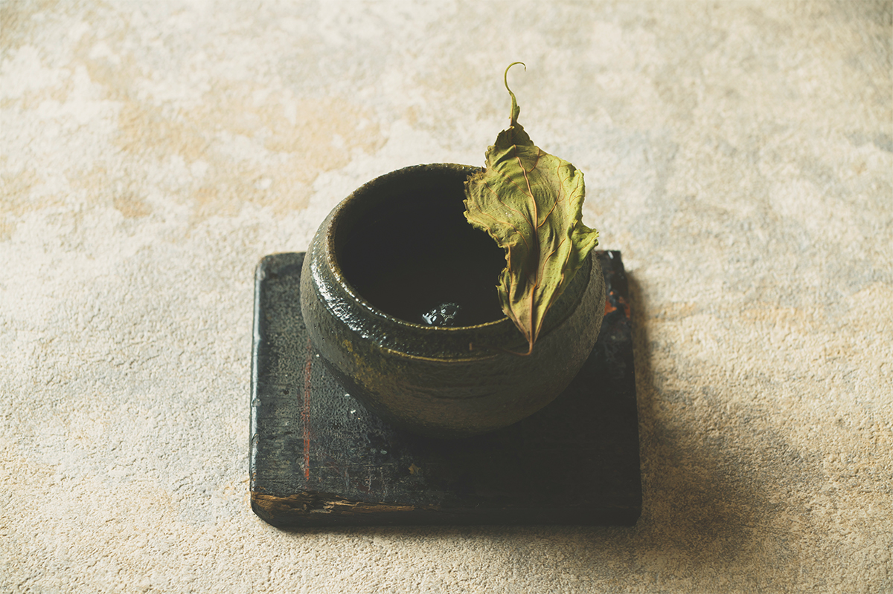
Первое блюдо, «Корни», это суп из корней шести овощей и трав, которые уже пошли в стрелку: выпустили бутоны и вытянули стебель. Экстракт получают в сифоне. Лёгкий дикий привкус постепенно расходится по телу, и кажется, что организм приходит в равновесие.
Дичь
Паштет из вороны
Главное блюдо съёмки это французский пате-ан-крут, паштет в тесте. Внутри рюкюская большеклювая ворона, китайский бюльбюль и другие дикие птицы, которые на Окинаве официально считаются вредителями.
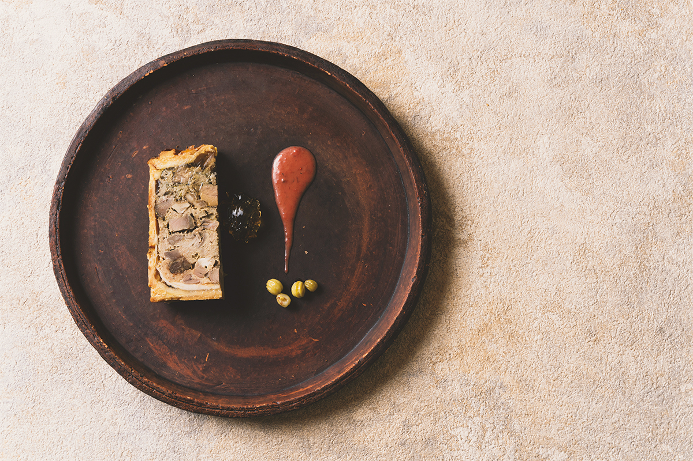
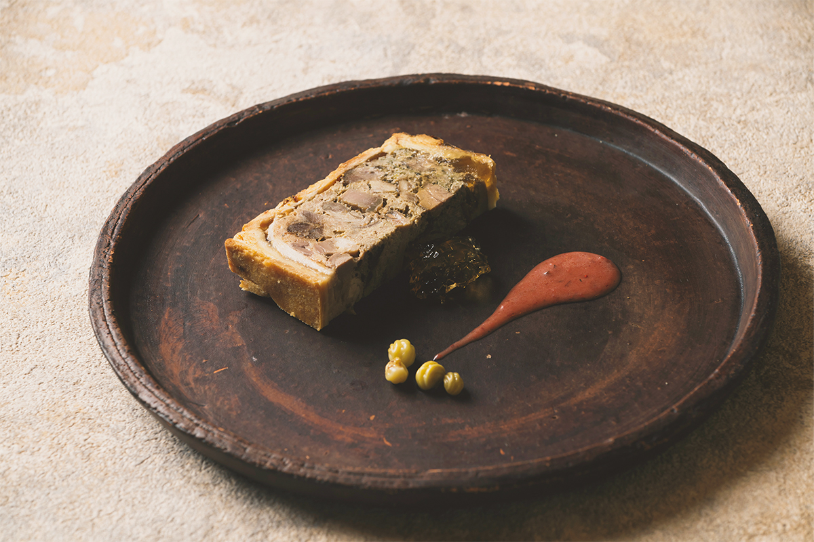
Ворону выдерживают, чтобы раскрылся вкус (французы называют это фазанированием), и маринуют в портвейне: мясо получается густым, мягким и глубоким. Бюльбюля и горлицу готовят с каплей белого вина, и они приятно хрустят на зубах. С тремя соусами вкус меняется от кусочка к кусочку: то насыщенный, то солёный, то свежий и кислый. Тут и понимаешь, за что любят паштет.
О каждом блюде шеф рассказывает подробно: как добыли продукт, как его готовили, как он превратился в то, что лежит на тарелке. И каждый раз думаешь, сколько огромного труда вложено в одно блюдо. Это напоминает простую вещь: всё, что мы едим, когда-то было живым.
Сет
Блюдо за блюдом
Ракушку магаки, которую на Окинаве зовут «тираджа», тушат в бульоне из рюкюского кабана и подают с этим соком как с соусом, рядом ломтики домашнего хамона и салями из того же кабана. Островная коза это местная окинавская порода: сердцевину сырого окорока и кожу шеи режут на тартар и кладут на «коку», лепёшку из пшеницы, дрожжей на островном рисе и чернил кальмара, с семенами горчицы и волокнами полыни.
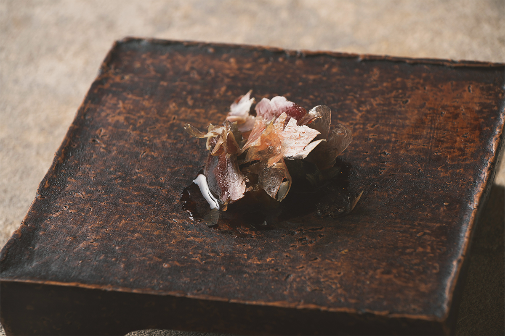
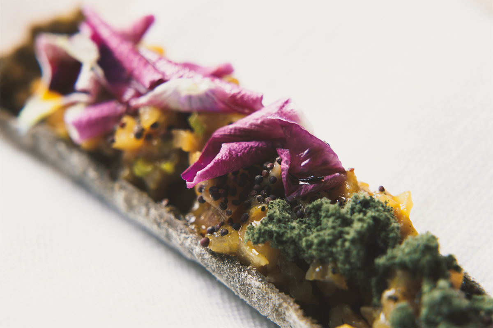
Мабэ это крупный двустворчатый моллюск: он стаями сидит в камнях и песке у берега и почти не попадает на рынок. Его запекают и подают с соусом из гороха, цветами и пеной из соевого молока с пёстрой фасолью. Филе тайваньской барракуды, обескровленной по методу икэдзимэ и подсушенной, мажут гарумом, рыбным соусом из мальков кибинаго, сворачивают рулетиком и жарят на углях. Соус из уваренного бульона на рыбных костях смешивают с руйем из островного чеснока и посыпают мелиссой.
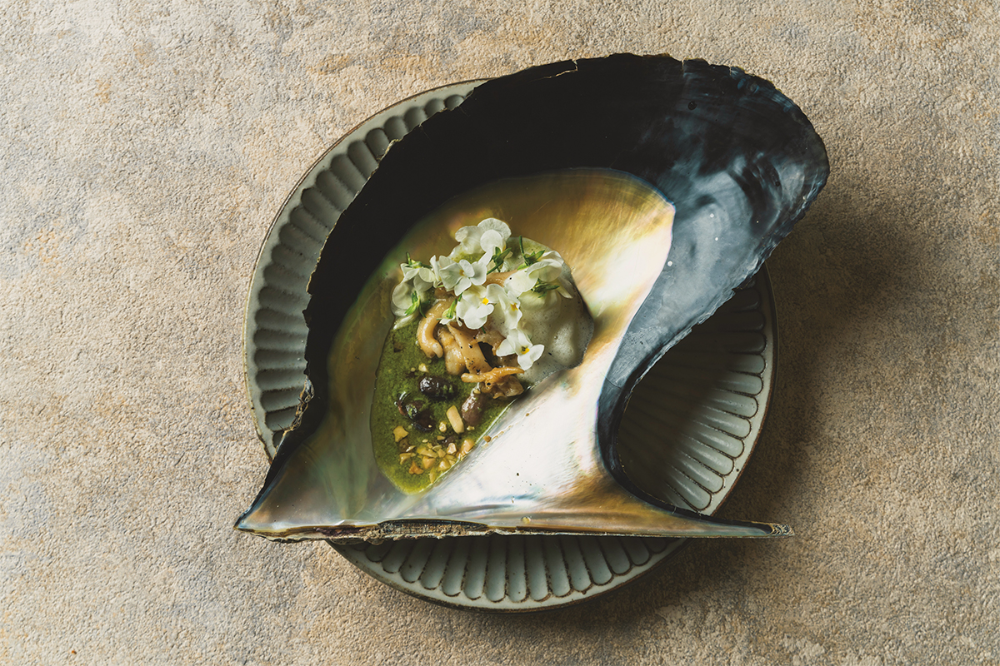
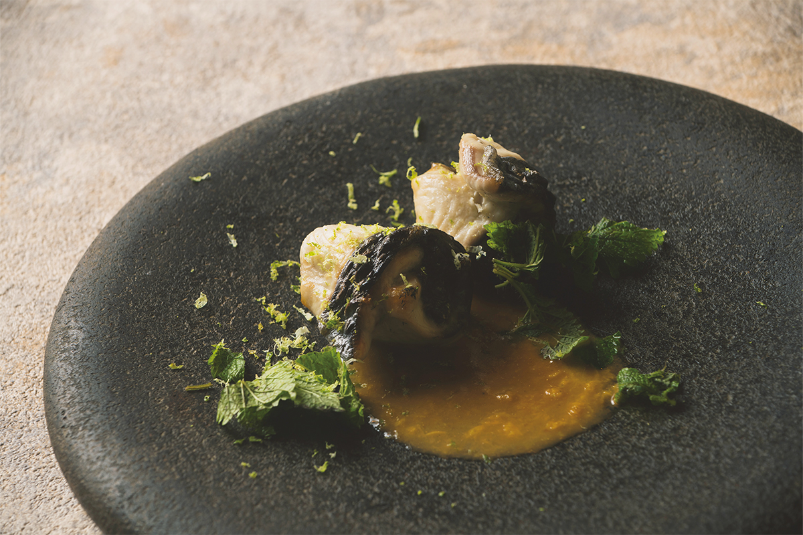
Для говядины «Аяхаси» берут корову, которая уже несколько раз телилась, и полтора года откармливают её заново. Кострец жарят на углях, поворачивая, и в конце коптят на соломе островного риса. Вместо соуса свёкла после недели молочнокислого брожения, а зелёный перец вымачивают от соли и маринуют в капустном уксусе. В «Траве и земле» семь трав, среди них центелла, гидрокотила, подорожник и цветы фиалки, смешаны с уксусом из пекинской капусты и слегка отцеженным молоком. «Землю» делают из почвы с поля островного лопуха, пшеницы и мутной воды.
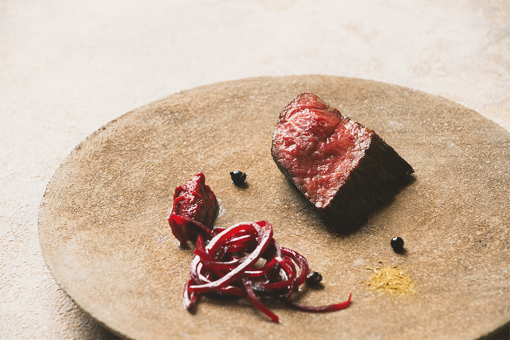
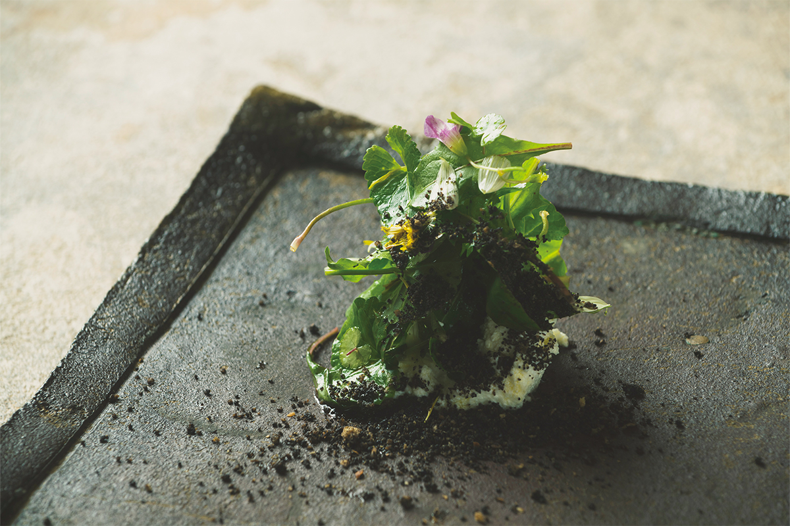
Фромаж блан шеф делает сам из окинавского молока и подаёт с мёдом, мякотью, соком и семенами маракуйи, арахисом с острова Иэ и пудрой из слегка ферментированного и высушенного фиолетового батата из Ёмитана. Финальный десерт «Нигана» готовят из экстракта этой горькой зелени и настоя окинавской водоросли ибаранори с жжёным чёрным сахаром: смесь замораживают и взбивают, а рядом кладут крошку пряника, испечённого со специями Ямбару.
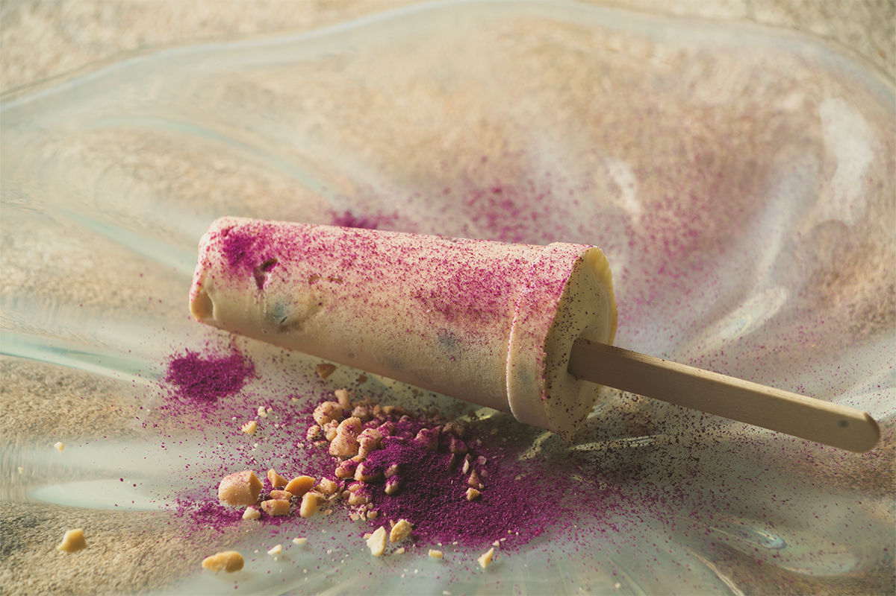
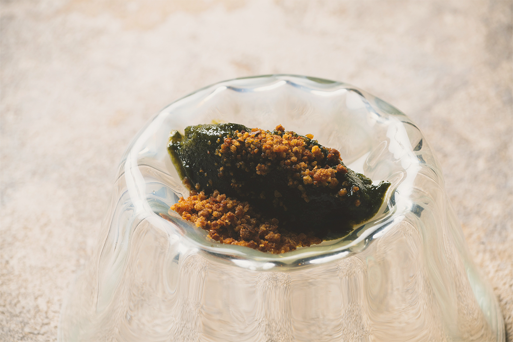
К сету подают напитки брожения и грузинское вино. Безалкогольные напитки тоже из растений: дистиллят ситника, настоянный со свежими верхушками ситника; дистиллят ромашки и мелиссы со свежими листьями и лемонграссом; настой корня одуванчика после ферментации и обжарки.
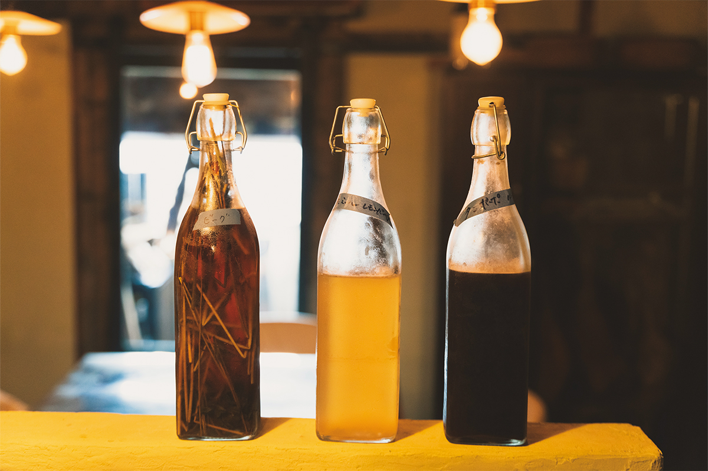
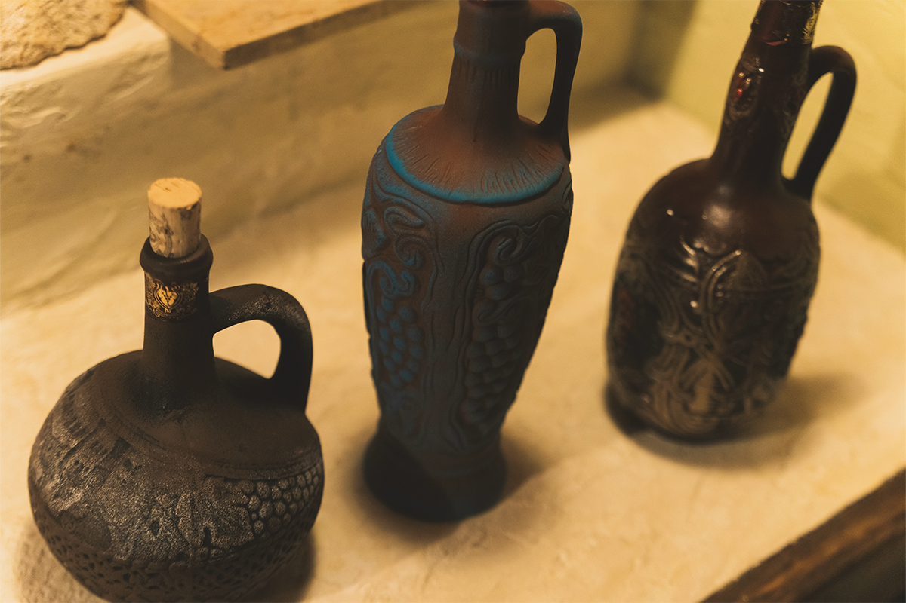
Охота
Дичь без отходов
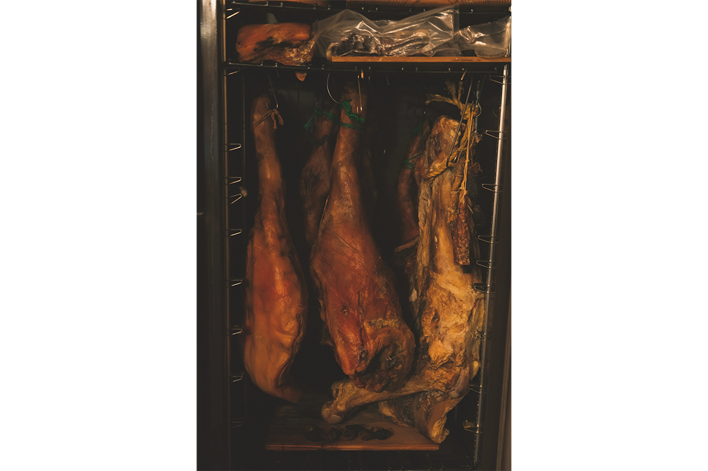
Ещё в годы учёбы шеф открыл для себя дичь и мечтал когда-нибудь готовить её на Окинаве. Около 2012 года он узнал, что в деревне Кунигами на севере острова рюкюских кабанов отстреливают: они разоряют поля и огороды. Шеф поехал к охотникам префектурного охотничьего общества. Профессиональных охотников на Окинаве нет, и общество держится почти целиком на добровольцах.
«Человек сам зашёл в горы и разрушил природу, и кабанам и птицам, которым нечего есть, приходится спускаться к людям. Называть их вредителями можно только с человеческой точки зрения. Если уж их отстреливают за урон посевам, я хотел, чтобы это не пропадало зря и чтобы мясо было как можно вкуснее. А для этого очень важно, как зверя добыли»
шеф Mauvaise herbe
Способов охоты много. В клетке или петле кабан пугается и бьётся. Если не добить его быстро, кровь расходится по телу, и у мяса появляется неприятный запах. Один из охотников общества прикармливает кабанов на звериной тропе и стреляет издалека, когда зверь спокоен, точно в область виска, с одного выстрела. Тушу по возможности сразу на месте освобождают от крови и внутренностей, правильно обрабатывают и хранят.
Кроме кабанов вредителями на Окинаве считаются и эндемичные птицы: рюкюская большеклювая ворона, китайский бюльбюль, буроухий бюльбюль. Примерно с 2015 года шеф получает их как продукт. К 2022 году он добивался, чтобы рядом с лесом построили цех переработки и дичь можно было официально продавать как мясо.
Говядина
Вторая жизнь коровы-матери
Примерно с 2017 года шеф работает и с коровами-матерями, то есть уже телившимися. Началось всё со знакомства с фермершей-животноводом. На Окинаве хорошо развито разведение скота: телят отсюда покупают для самых известных марок говядины Японии. А коров-матерей почти всех списывают или пускают на фарш и полуфабрикаты и вывозят за пределы префектуры.
«Окинавских коров ценят, значит, и мясо коров-матерей должно быть вкусным»
фермерша-животновод
С 2016 года она пробует откармливать их заново. Корова получает особый корм и много двигается, чтобы ушёл лишний жир. Довести её до нужного размера стоит огромного труда и больших денег. Шеф и фермерша вместе изучают, как ещё лучше выдерживать такую говядину.
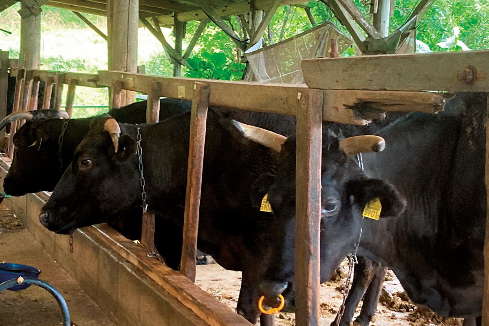
Море
Рыбак, который ныряет по просьбе
«В рыбе для меня главное, насколько сохранился её вкус»
шеф Mauvaise herbe
Больше всего он доверяет одному рыбаку. Почти вся рыба в ресторане обескровлена методом икэдзимэ и правильно обработана: к этому шеф и рыбак пришли вместе за долгие годы. Рыбак в одиночку ловит тунца на удочку, а по просьбе шефа ныряет за добычей. Рыбу из прилова, которая обычно не идёт в дело, он тоже пробует и самую вкусную передаёт шефу, так она попадает в меню. Море за последние годы сильно изменилось, ресурсы истощаются. Рыбак думает о том, как при небольшом улове зарабатывать больше.
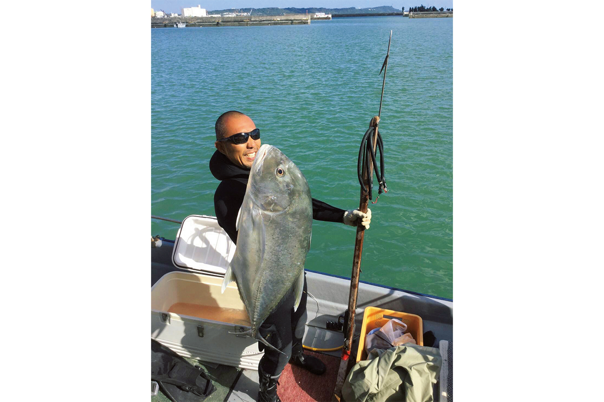
Брожение
Кувшины, которые дышат
Шеф часто говорит о вине поваров перед природой. Гоняясь за продуктами, они приложили руку к разрушению среды и перелову и слишком полагались на то, хорош ли продукт сам по себе.
Окинавскую рыбу обычно считают невкусной, но у шефа она становится совсем другой. В отличие от рыбы из других мест Японии, которую закаляют сильные течения, здешняя живёт в тёплой воде и плохо набирает жир. Корм другой, поэтому в рыбе много воды. Если правильно её убрать и готовить по состоянию рыбы, мясо становится нежным и вкусным.
Такую дополнительную работу с продуктом шеф называет «приёмом». Например, если снизить активность воды в мясе, микроорганизмы начинают работать правильно: белки распадаются, аминокислот становится больше, вкус усиливается.
Больше десяти лет брожение и выдержка входят в набор его приёмов. В ресторане стоит кувшин с уксусом из пекинской капусты: зимой капусту закладывают, процеживают и используют экстракт как уксус. Когда после новой порции капусты брожение слабеет, добавляют кожуру яблок, на которой живут уксуснокислые бактерии.
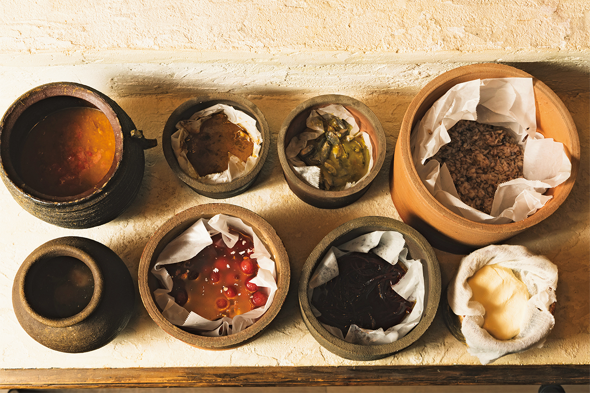
Для этих приёмов шеф использует керамику мастерицы из города Нандзё. Она работает с глиной для «араяти», неглазурованной керамики Цубоя, в которую при королевстве Рюкю объединили местные мастерские. Араяти обжигают без глазури, и в те времена в ней хранили мисо, воду, сакэ, солёную свинину. Обжиг идёт при низкой температуре, поэтому кувшин «дышит» и отлично подходит для хранения, а мастерица переносит это свойство в наши дни.
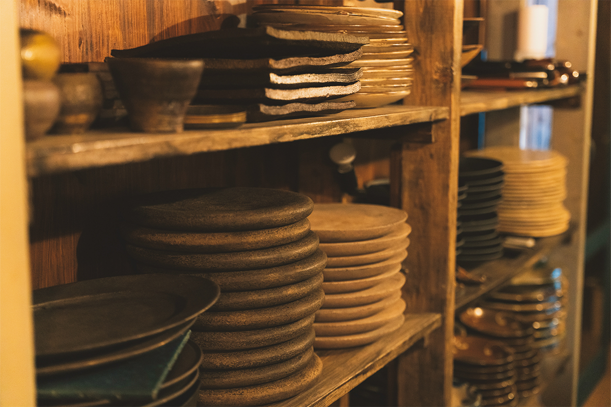
Рыбак говорит, что шеф человек принципов и во всём ищет суть. Mauvaise herbe по-французски значит «сорная трава», и, по словам шефа, в названии есть оттенок «плохой травы, которая отошла от главной дороги». Кажется, в нём выражен образ жизни, где важна суть, а не то, как она выглядит со стороны.
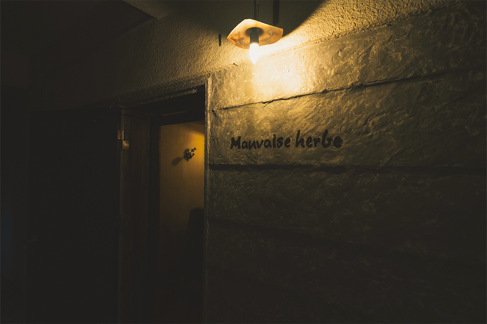
Mauvaise herbe
- Адрес
- префектура Окинава, город Урума
- Часы работы
- только по предварительной записи (запись и вопросы по электронной почте restaurant4sln@gmail.com)
Фото: Цунэтака Симабукуро.